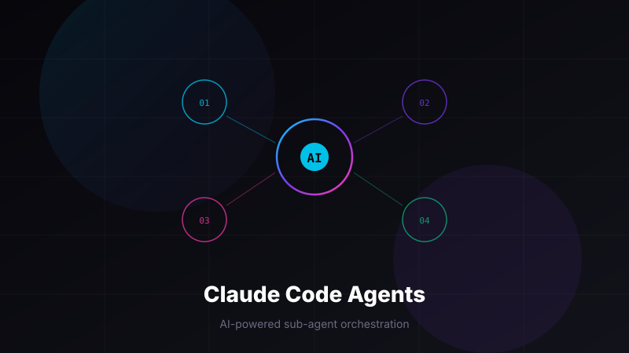
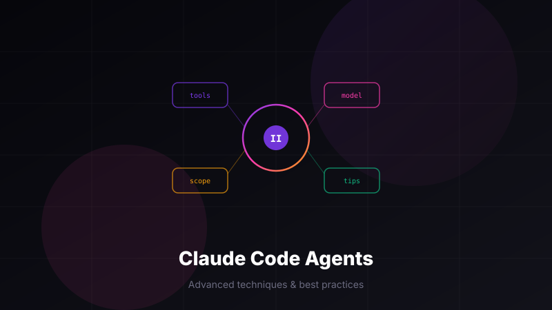

AI Claude Code Skills入門ガイド — スラッシュコマンドで作業を自動化 Skillsの仕組みと作り方をゼロから解説。エージェントとの違い、実際に使ってみた所感も紹介します。 2026年4月3日
 AI Claude Codeエージェント機能 完全入門ガイド【前編】 「ターミナルって何？」というレベルから、最初のエージェントを作って動かすところまで一歩ずつ進めます。 2026年4月2日
 AI Claude Codeエージェント機能 完全入門ガイド【後編】 呼び出し方のバリエーション、設定の詳細、うまく使いこなす4つのコツなど応用テクニックを紹介します。 2026年4月2日